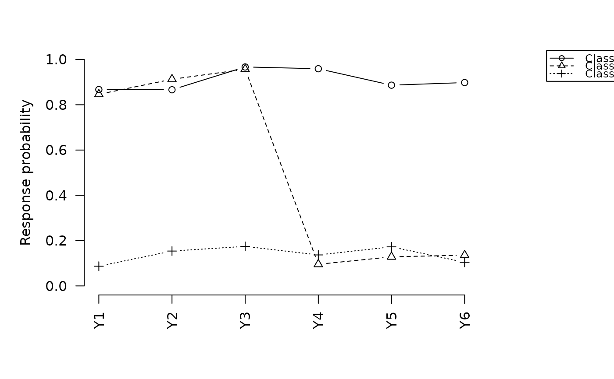

Three-step LCA estimation with covariates and/or distal outcomes
Source:R/three_step.R
three_step.RdFits a three-step latent class model through the following steps:
Measurement model: estimates latent class parameters (\(\pi\), \(\phi\)) using multilevLCA (Lyrvall et al., 2025).
Classification-error matrix: computes posterior class probabilities and the T x T misclassification probability matrix \(P(W = s \mid X = t)\), with standard errors corrected for classification-error propagation (Bakk, Oberski & Vermunt, 2014).
Structural model: estimates covariate effects using two-step starting values (Bakk & Kuha, 2018) and/or distal outcome means following Bakk, Tekle & Vermunt (2013), with the ML correction (Vermunt, 2010) or BCH correction (Bolck, Croon & Hagenaars, 2004). See
vignette("tseLCA", package = "tseLCA")for a worked example.
Usage
three_step(
data,
Y.names,
n_classes,
Zp.names = NULL,
Zo.name = NULL,
step1 = NULL,
startval = NULL,
n_init = NULL,
use.two.step = TRUE,
use.modal.assignment = TRUE,
include.intercept = TRUE,
use.simple.cov = FALSE,
incomplete = FALSE,
boundary.tol = 0.01,
maxIter.measurement = 5000,
measurement.tol = 1e-08,
covariate.tol = 1e-06,
iter.measurement = 10L,
R2.threshold = 0.7,
use.bch = FALSE,
em.maxIter = 200L,
get.twostep.vcov = FALSE,
rebase = "C1",
family = "gaussian",
correct.spec = FALSE,
verbose = FALSE
)Arguments
- data
A data.frame containing all columns referenced by
Y.names,Zp.names, andZo.name.- Y.names
Character vector of indicator column names. Need to be coded as consecutive integers with base level starting at
0.- n_classes
Integer. Number of latent classes.
- Zp.names
Character vector of covariate column names, or
NULLfor a measurement-only fit. DefaultNULL.- Zo.name
Single character name of the distal outcome column, or
NULL. DefaultNULL.- step1
Pre-fitted Step-1 object (output of
lca_step1()or a priorthree_step()call), orNULLto run Step 1 internally. DefaultNULL.- startval
Optional starting classification for the Step-1 measurement model, either an integer vector of length
nrow(data)(a class assignment1..n_classesfor every row) or a numeric matrix of conditional item-response probabilities \(P(Y_h = k \mid X = t)\) (one row per item-category pair inY.namesorder, one column per class) from which a classification is derived internally. Seelca_step1_startval()for the full description of both forms and typical sources (an external solver run with many random starts, or a published item-response table). multilevLCA's default initialization (k-means on principal components) is deterministic given the data and can converge to a local optimum of the Step-1 log-likelihood; supplyingstartvalbypasses it entirely (kmea = FALSEwith the classification injected as multilevLCA'sstartval). Mutually exclusive withstep1andn_init. DefaultNULL.- n_init
Optional positive integer. If supplied, fits the Step-1 measurement model
n_inittimes from independent uniform-random classifications (kmea = FALSE, not multilevLCA's k-means-on-PCA path) and keeps the fit with the highest log-likelihood – the unconditional multi-start analog ofn_initin StepMix ornrepin poLCA. This is distinct fromiter.measurement, which instead reruns multilevLCA's own k-means initialization, and only when the entropy R\(^2\) of the default fit is belowR2.threshold;n_initrestarts always run. Mutually exclusive withstep1andstartval. DefaultNULL.- use.two.step
Logical. Initialize Step-3 from two-step estimates. Default
TRUE.- use.modal.assignment
Logical. Use modal (hard) class assignments in Step 2 and 3.
FALSEuses soft posterior weights. DefaultTRUE.- include.intercept
Logical. Prepend an intercept column to the covariate design matrix. Default
TRUE.- use.simple.cov
Logical. Skip the Step-1 measurement-uncertainty correction and return only the robust sandwich variance. Faster but underestimates standard errors when class separation is low. Default
FALSE.- incomplete
Logical. FIML for partially missing indicators. See the
Missing Datasection ofvignette("tseLCA", package = "tseLCA"). DefaultFALSE.- boundary.tol
Scalar. Parameters within this tolerance of 0 or 1 are treated as fixed when computing the Step-1 variance matrix for numerical stability. Default
1e-2.- maxIter.measurement
Integer. Maximum EM iterations for Step 1. Default
5000L.- measurement.tol
Scalar. Convergence tolerance for the Step-1 EM algorithm. Default
1e-8.- covariate.tol
Scalar. Convergence tolerance for the Step-3 Newton-Raphson or EM algorithm. Default
1e-6.- iter.measurement
Integer. Number of random restarts triggered when the Step-1 entropy R\(^2\) falls below
R2.threshold. Default10L.- R2.threshold
Scalar. Entropy R\(^2\) threshold below which Step-1 random restarts are triggered. Default
0.70.- use.bch
Logical. Use BCH-corrected weights instead of the ML estimator in Step 3. May error if BCH weights induce a non-positive semi-definite Hessian in the third step (common in cases of low separation). Default
FALSE.- em.maxIter
Integer. Maximum EM iterations for the Step-3 covariate or distal outcome model. Default
200L.- get.twostep.vcov
Logical. If
TRUE, obtain multilevLCA's bias-corrected variance-covariance matrix for the two-step gamma estimates and store it in$two_step_vcov. If thefitZobject passed viastep1already contains aVarmat_cor(from a priorfitZ_from_multiLCA()or plainmultiLCAcall), it is attached automatically even whenget.twostep.vcov = FALSE. DefaultFALSE.- rebase
Character (e.g.
"C1","C2") or integer specifying which latent class to use as the reference category in the multinomial logit. The measurement model is permuted so this class becomes column 1 before any structural estimation. Default"C1".- family
Character. Distal outcome family: one of
"gaussian"(class means),"poisson"(log-rates), or"binomial"(logits). Default"gaussian".- correct.spec
Logical. Use the model-robust outer-product Hessian for Step-3 standard errors rather than the observed-data Hessian. Not appropriate when the Step-3 model may be misspecified. Default
FALSE.- verbose
Logical. Print convergence messages. Default
FALSE.
Value
An S3 object of class tseLCA. The subclass depends on which
models were estimated:
tseLCA_measurementReturned when neither
Zp.namesnorZo.nameis supplied. Contains the following elements:measurement_modelStep-1 output list from
lca_step1().llikFinal Step-1 log-likelihood.
AIC,BICInformation criteria from the measurement model.
R2entrEntropy R\(^2\) of the measurement model.
n_classesNumber of latent classes.
posteriorsN x T matrix of soft posterior class probabilities.
classificationsLength-N integer vector of modal class assignments.
tseLCA_covariateReturned when
Zp.namesis supplied andZo.nameisNULL. Contains all elements oftseLCA_measurementplus:three_stepQ x (T-1) matrix of Step-3 gamma coefficients.
three_step_vcovQ(T-1) x Q(T-1) variance-covariance matrix for
three_step, with measurement-uncertainty correction unlessuse.simple.cov = TRUE.two_stepQ x (T-1) matrix of two-step starting values, or
NULLifuse.two.step = FALSE.two_step_vcovmultilevLCA bias-corrected vcov for the two-step estimates, or
NULL.estimatorCharacter:
"ML"or"BCH".entropy.R2Covariate-adjusted entropy R\(^2\).
llikProfile log-likelihood \(\sum_i \log \sum_t P(X=t|Z_{p,i};\hat{\gamma}) P(Y_i|X=t;\hat{\phi})\), with Step-1 parameters \(\hat{\phi}\) held fixed. By construction smaller than the equivalent one-step MLE likelihood.
tseLCA_distalReturned when
Zo.nameis supplied andZp.namesisNULL. Contains:three_stepNamed length-T vector of Step-3 distal outcome parameters (means, log-rates, or logits depending on
family).three_step_vcovT x T variance-covariance matrix for
three_step, namedmu_C1throughmu_CT.three_step.llikStep-3 distal log-likelihood \(\log P(Z_o|X=t)\) at converged estimates.
llikProfile log-likelihood \(\sum_i \log \sum_t P(X=t|\hat{\pi}) P(Z_{o,i}|X=t;\hat{\mu}) P(Y_i|X=t;\hat{\phi})\), with Step-1 parameters \(\hat{\pi}, \hat{\phi}\) held fixed. By construction smaller than the equivalent one-step MLE likelihood.
AICAkaike information criterion based on
llik.BICBayesian information criterion based on
llik, using the number of distal-complete observations.familyCharacter. The distal outcome family used.
estimatorCharacter:
"ML"or"BCH".posteriorsN x T soft posterior matrix.
classificationsLength-N modal class assignment vector.
tseLCA_bothReturned when both
Zp.namesandZo.nameare supplied. Contains:covariateA
tseLCA_covariate-structured sub-list (see above), includingllik,AIC,BIC,entropy.R2.distalA
tseLCA_distal-structured sub-list (see above), includingllik,AIC,BIC,three_step.llik.family,n_classes,estimatorShared top-level fields.
posteriors,classificationsShared N x T posterior matrix and length-N modal class vector.
References
Bakk, Z., Tekle, F. B., & Vermunt, J. K. (2013). Estimating the association between latent class membership and external variables using bias-adjusted three-step approaches. Sociological Methodology, 43(1), 272–311. doi:10.1177/0081175012470644
Bakk, Z., & Kuha, J. (2018). Two-step estimation of models between latent classes and external variables. Psychometrika, 83(4), 871–892. doi:10.1007/s11336-017-9592-7
Bakk, Z., Pohle, M. J., & Kuha, J. (2025). Bias-adjusted three-step estimation of structural models for latent classes. Multivariate Behavioral Research. doi:10.1080/00273171.2025.2473935
See also
vignette("tseLCA", package = "tseLCA") for a full worked
example; lca_step1() for standalone Step-1 estimation
(including from an externally supplied starting classification, via its
own startval argument); fitZ_from_fit0() and fitZ_from_multiLCA()
for two-step covariate estimation.
Examples
d <- generate_data(n = 200, separation = "high",
scenario = "covariate", seed = 1)
# Measurement model only
fit_m <- three_step(d, Y.names = paste0("Y", 1:6), n_classes = 3)
summary(fit_m)
#> -- tseLCA Measurement Model --------------------------------
#> Latent classes : 3
#> Log-likelihood : -595.2880
#> AIC : 1230.5760
#> BIC : 1296.5424
#> Entropy R² : 0.8430
#>
#> Class prevalences:
#>
#> P(C1) 0.3495
#> P(C2) 0.2915
#> P(C3) 0.3590
#> attr(,"names")
#> [1] "C1" "C2" "C3"
#>
#> Item-response probabilities (P(Y=1|class)):
#> C1 C2 C3
#> P(Y1|C) 0.8702 0.7946 0.1232
#> P(Y2|C) 0.9017 0.8853 0.1025
#> P(Y3|C) 0.8743 0.8757 0.0672
#> P(Y4|C) 0.8566 0.0913 0.0669
#> P(Y5|C) 0.8910 0.0978 0.0281
#> P(Y6|C) 0.8206 0.1385 0.0914
# ML three-step with simple SEs (fast)
fit <- three_step(d, Y.names = paste0("Y", 1:6), n_classes = 3,
Zp.names = "Zp", use.simple.cov = TRUE)
summary(fit)
#> -- tseLCA Three-step Covariate Model -----------------------
#> Latent classes : 3
#> Estimator : ML
#> Log-likelihood : -548.6403
#> AIC : 1177.2805
#> BIC : 1309.2132
#> Entropy R² : 0.8589 (covariate-adjusted)
#>
#> Two-step (starting) estimates:
#> C2 C3
#> Intercept 1.9888 -3.1317
#> Zp -1.0175 0.9190
#>
#> Three-step estimates:
#> Estimate Std.Error z.value p.value
#> Intercept:C2 2.2334 0.6258 3.5688 < 0.001 ***
#> Zp:C2 -1.1570 0.3002 -3.8545 < 0.001 ***
#> Intercept:C3 -3.2742 0.7191 -4.5529 < 0.001 ***
#> Zp:C3 0.9401 0.1896 4.9587 < 0.001 ***
#> ---
#> Signif. codes: 0 '***' 0.001 '**' 0.01 '*' 0.05 '.' 0.1 ' ' 1
coef(fit)
#> C2 C3
#> Intercept 2.233384 -3.2742157
#> Zp -1.156988 0.9400712
vcov(fit)
#> Intercept:C2 Zp:C2 Intercept:C3 Zp:C3
#> Intercept:C2 0.391644881 -0.173583653 0.001643327 -0.002599746
#> Zp:C2 -0.173583653 0.090099886 0.016315352 -0.002300251
#> Intercept:C3 0.001643327 0.016315352 0.517169347 -0.130664301
#> Zp:C3 -0.002599746 -0.002300251 -0.130664301 0.035941355
# Full measurement-uncertainty correction (see vignette for interpretation)
fit_cor <- three_step(d, Y.names = paste0("Y", 1:6), n_classes = 3,
Zp.names = "Zp", use.simple.cov = FALSE,
use.modal.assignment = FALSE)
summary(fit_cor)
#> -- tseLCA Three-step Covariate Model -----------------------
#> Latent classes : 3
#> Estimator : ML
#> Log-likelihood : -548.4895
#> AIC : 1176.9790
#> BIC : 1308.9117
#> Entropy R² : 0.8596 (covariate-adjusted)
#>
#> Two-step (starting) estimates:
#> C2 C3
#> Intercept 1.9888 -3.1317
#> Zp -1.0175 0.9190
#>
#> Three-step estimates:
#> Estimate Std.Error z.value p.value
#> Intercept:C2 2.0352 0.6245 3.2592 0.0011 **
#> Zp:C2 -1.0576 0.2999 -3.5267 < 0.001 ***
#> Intercept:C3 -3.1385 0.6919 -4.5361 < 0.001 ***
#> Zp:C3 0.9090 0.1832 4.9619 < 0.001 ***
#> ---
#> Signif. codes: 0 '***' 0.001 '**' 0.01 '*' 0.05 '.' 0.1 ' ' 1
# BCH estimator
fit_bch <- three_step(d, Y.names = paste0("Y", 1:6), n_classes = 3,
Zp.names = "Zp", use.bch = TRUE,
use.simple.cov = TRUE)
summary(fit_bch)
#> -- tseLCA Three-step Covariate Model -----------------------
#> Latent classes : 3
#> Estimator : BCH
#> Log-likelihood : -548.5643
#> AIC : 1177.1287
#> BIC : 1309.0614
#> Entropy R² : 0.8590 (covariate-adjusted)
#>
#> Two-step (starting) estimates:
#> C2 C3
#> Intercept 1.9888 -3.1317
#> Zp -1.0175 0.9190
#>
#> Three-step estimates:
#> Estimate Std.Error z.value p.value
#> Intercept:C2 2.1318 0.6582 3.2386 0.0012 **
#> Zp:C2 -1.0967 0.3355 -3.2686 0.0011 **
#> Intercept:C3 -3.2851 0.8029 -4.0913 < 0.001 ***
#> Zp:C3 0.9407 0.2081 4.5196 < 0.001 ***
#> ---
#> Signif. codes: 0 '***' 0.001 '**' 0.01 '*' 0.05 '.' 0.1 ' ' 1
# Change reference class
fit_c2 <- three_step(d, Y.names = paste0("Y", 1:6), n_classes = 3,
Zp.names = "Zp", use.simple.cov = TRUE,
rebase = "C2")
summary(fit_c2)
#> -- tseLCA Three-step Covariate Model -----------------------
#> Latent classes : 3
#> Estimator : ML
#> Log-likelihood : -548.6403
#> AIC : 1177.2805
#> BIC : 1309.2132
#> Entropy R² : 0.8589 (covariate-adjusted)
#>
#> Two-step (starting) estimates:
#> C1 C3
#> Intercept -1.9890 -5.1203
#> Zp 1.0175 1.9363
#>
#> Three-step estimates:
#> Estimate Std.Error z.value p.value
#> Intercept:C1 -2.2334 0.6258 -3.5688 < 0.001 ***
#> Zp:C1 1.1570 0.3002 3.8545 < 0.001 ***
#> Intercept:C3 -5.5076 0.9516 -5.7878 < 0.001 ***
#> Zp:C3 2.0971 0.3614 5.8019 < 0.001 ***
#> ---
#> Signif. codes: 0 '***' 0.001 '**' 0.01 '*' 0.05 '.' 0.1 ' ' 1
# Gaussian distal outcome
d2 <- generate_data(200, "high", "distal", seed = 2)
fit_dis <- three_step(d2, Y.names = paste0("Y", 1:6), n_classes = 3,
Zo.name = "Zo", family = "gaussian",
use.simple.cov = TRUE)
summary(fit_dis)
#> -- tseLCA Three-step Distal Outcome Model -------------------
#> Latent classes : 3
#> Estimator : ML
#> Family : gaussian
#> Log-likelihood : -892.7558
#> AIC : 1831.5116
#> BIC : 1907.3729
#>
#> Distal outcome estimates by class:
#> Estimate Std.Error z.value p.value
#> mu_C1 (mean) -0.8223 0.1169 -7.0356 < 0.001 ***
#> mu_C2 (mean) 1.0946 0.1141 9.5956 < 0.001 ***
#> mu_C3 (mean) 0.0492 0.1531 0.3212 0.7480
#> ---
#> Signif. codes: 0 '***' 0.001 '**' 0.01 '*' 0.05 '.' 0.1 ' ' 1
# Pass a pre-fitted measurement model to skip Step 1
fit_step1 <- three_step(d, Y.names = paste0("Y", 1:6), n_classes = 3)
fit2 <- three_step(d, Y.names = paste0("Y", 1:6), n_classes = 3,
Zp.names = "Zp", step1 = fit_step1,
use.simple.cov = TRUE)
summary(fit2)
#> -- tseLCA Three-step Covariate Model -----------------------
#> Latent classes : 3
#> Estimator : ML
#> Log-likelihood : -548.6403
#> AIC : 1177.2805
#> BIC : 1309.2132
#> Entropy R² : 0.8589 (covariate-adjusted)
#>
#> Two-step (starting) estimates:
#> C2 C3
#> Intercept 1.9888 -3.1317
#> Zp -1.0175 0.9190
#>
#> Three-step estimates:
#> Estimate Std.Error z.value p.value
#> Intercept:C2 2.2334 0.6258 3.5688 < 0.001 ***
#> Zp:C2 -1.1570 0.3002 -3.8545 < 0.001 ***
#> Intercept:C3 -3.2742 0.7191 -4.5529 < 0.001 ***
#> Zp:C3 0.9401 0.1896 4.9587 < 0.001 ***
#> ---
#> Signif. codes: 0 '***' 0.001 '**' 0.01 '*' 0.05 '.' 0.1 ' ' 1
# Supply an external starting classification for Step 1 (bypasses
# multilevLCA's k-means-on-PCA initialization; here we use the DGP's own
# true classes as a stand-in for e.g. a StepMix solution with many
# random starts)
fit_ext <- three_step(d, Y.names = paste0("Y", 1:6), n_classes = 3,
startval = d$X, use.simple.cov = TRUE)
summary(fit_ext)
#> -- tseLCA Measurement Model --------------------------------
#> Latent classes : 3
#> Log-likelihood : -595.2880
#> AIC : 1230.5760
#> BIC : 1296.5424
#> Entropy R² : 0.8430
#>
#> Class prevalences:
#>
#> P(C1) 0.3495
#> P(C2) 0.2915
#> P(C3) 0.3590
#> attr(,"names")
#> [1] "C1" "C2" "C3"
#>
#> Item-response probabilities (P(Y=1|class)):
#> C1 C2 C3
#> P(Y1|C) 0.8702 0.7946 0.1232
#> P(Y2|C) 0.9017 0.8853 0.1025
#> P(Y3|C) 0.8743 0.8757 0.0672
#> P(Y4|C) 0.8566 0.0913 0.0669
#> P(Y5|C) 0.8910 0.0978 0.0281
#> P(Y6|C) 0.8206 0.1385 0.0914
# Many random-classification restarts for Step 1, keeping the best
# (analogous to n_init in StepMix or nrep in poLCA)
fit_ninit <- three_step(d, Y.names = paste0("Y", 1:6), n_classes = 3,
n_init = 20L, use.simple.cov = TRUE)
summary(fit_ninit)
#> -- tseLCA Measurement Model --------------------------------
#> Latent classes : 3
#> Log-likelihood : -595.2880
#> AIC : 1230.5760
#> BIC : 1296.5424
#> Entropy R² : 0.8430
#>
#> Class prevalences:
#>
#> P(C1) 0.3495
#> P(C2) 0.2915
#> P(C3) 0.3590
#> attr(,"names")
#> [1] "C1" "C2" "C3"
#>
#> Item-response probabilities (P(Y=1|class)):
#> C1 C2 C3
#> P(Y1|C) 0.8702 0.7946 0.1232
#> P(Y2|C) 0.9017 0.8852 0.1025
#> P(Y3|C) 0.8743 0.8757 0.0672
#> P(Y4|C) 0.8566 0.0913 0.0669
#> P(Y5|C) 0.8910 0.0978 0.0281
#> P(Y6|C) 0.8206 0.1385 0.0914
# Plot item-response profiles from the measurement model
plot(fit)
